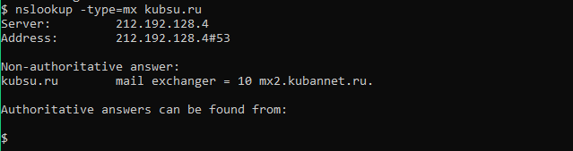
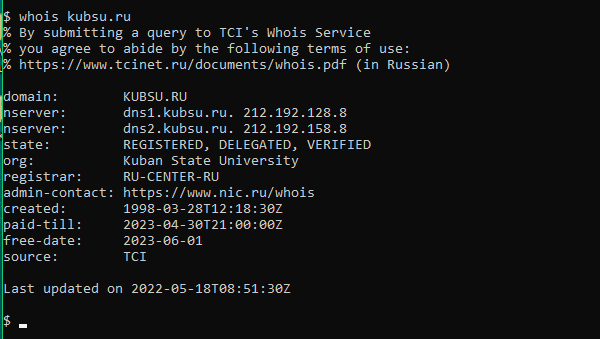
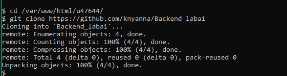
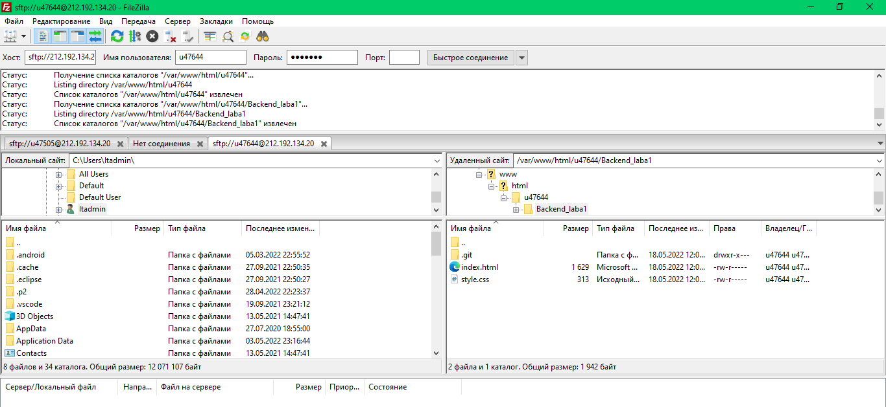

Подключение PuTTy

Подключение утилиту ping - это позволит оценить качество подключения и время, необходимое для преодоления пути к другому компьютеру и обратно.

С помощью утилиты nslookup узнаем содежимое DNS(Domain Name System) и с помощью записи mx укажем на сервере почту для данного домена

С помощью протокола whois сделаем запрос в базу данных, где храняться зарегистрированные пользователи,блок IP-адрессов и т.д..
Так же этот протокол используется для более широкого спектра другой информации

С помощью git clone создаём копию репозитория

Здесь смотрим скаченные файлы.
